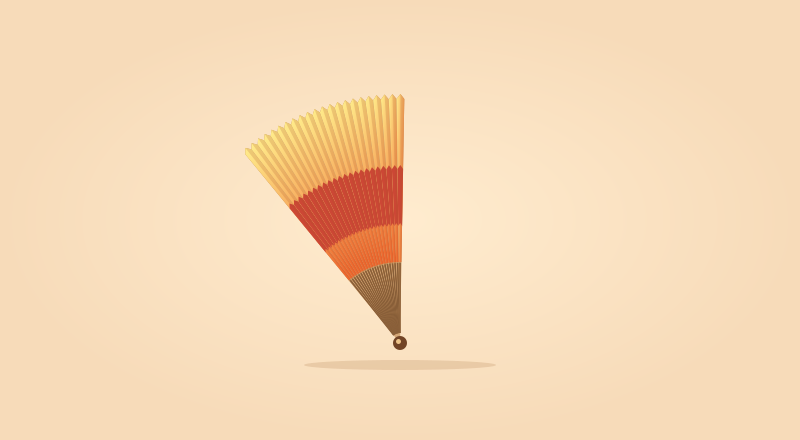
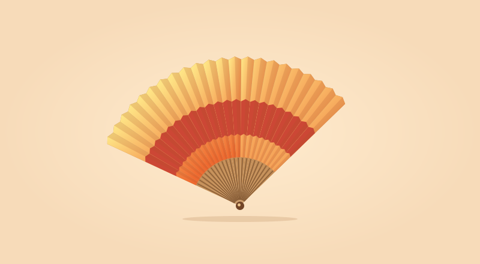
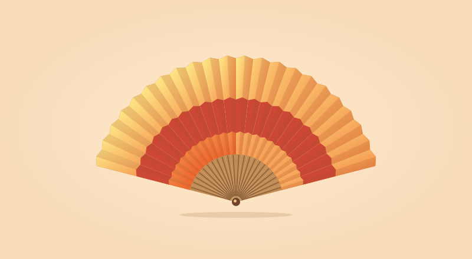

스크롤 장면과 이미지 띠
아래로 스크롤하면 부채가 펼쳐지고, 위로 돌아가면 같은 장면이 거꾸로 재생됩니다.
내 상품 사진으로 장면 만들기
예제에는 부채가 펼쳐지는 장면 32장을 사용했습니다. 사진이 몇 장이면 아래처럼 재생 순서대로 넣으세요. 각 주소를 아임웹에 올린 이미지 주소로 바꾸면 됩니다.
<div data-imweb-motion="sequence">
<img src="첫번째사진.webp" alt="제품 뚜껑이 열리는 모습">
<img src="두번째사진.webp" alt="" loading="lazy">
<img src="세번째사진.webp" alt="" loading="lazy">
</div>번호가 붙은 연속 사진이 많을 때
예제처럼 01부터 32까지 번호가 붙은 이미지는 파일 주소 규칙과 개수만 적으면 됩니다. {frame}은 스크롤 위치에 따라 바뀝니다.
<div data-imweb-motion="sequence"
data-frame-src="https://nayoonkyung0913.github.io/nayoonk/examples/fan/{frame}.svg"
data-frame-count="32" data-frame-pad="2">
<img src="https://nayoonkyung0913.github.io/nayoonk/examples/fan/01.svg" alt="부채가 펼쳐지는 모습">
</div>자동으로 흐르는 이미지 띠
상품 사진을 가로로 이어 보여줍니다. 일시정지한 뒤 앞뒤 사진을 직접 넘길 수 있어요.



<div data-imweb-motion="marquee">
<img src="첫번째제품.jpg" alt="첫 번째 제품">
<img src="두번째제품.jpg" alt="두 번째 제품">
<img src="세번째제품.jpg" alt="세 번째 제품">
</div>